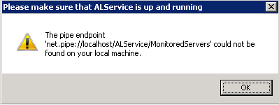

I get the "pipe endpoint cannot be found" error when I launch the console, or after some
time after launching it.

The issue occurs when the Account Lockout Examiner does not start or crashes.
To resolve the issue please make sure that the Netwrix Account Lockout Examiner service is started, restart it if necessary and re-run the console. If the issue persists, please make sure that you are running the latest version of Account Lockout Examiner https://www.netwrix.com/account_lockout_examiner.html
The issue occurs when the Account Lockout Examiner does not start or crashes.
To resolve the issue please make sure that the Netwrix Account Lockout Examiner service is started, restart it if necessary and re-run the console. If the issue persists, please make sure that you are running the latest version of Account Lockout Examiner https://www.netwrix.com/account_lockout_examiner.html